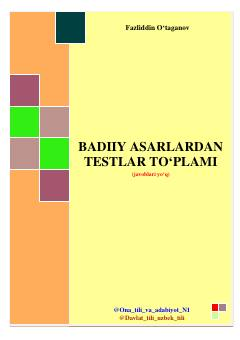

BAO‘tkir Hoshimov asarlari bo‘yicha tuzilgan adabiy testlar to‘plami.
Ushbu to‘plam o‘zbek adabiyoti, xususan O‘tkir Hoshimov asarlari bo‘yicha tuzilgan test savollarini o‘z ichiga oladi. Kitob o‘quvchilarga badiiy asarlarni tahlil qilish va bilimlarini sinab ko‘rishda yordam beradi.